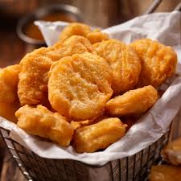

Nuggets maison
Des bouchées de poulet panées et croustillantes, faites maison.
Ingrédients :
- 400g de blanc de poulet
- 2 œufs
- Farine
- Chapelure
- Sel, poivre, paprika
- Huile pour friture
Préparation :
- Coupe le poulet en morceaux et assaisonne‑les.
- Passe chaque morceau dans la farine, puis l’œuf battu et enfin la chapelure.
- Fais frire jusqu’à ce que les nuggets soient dorés et croustillants.
← Retour à l'accueil